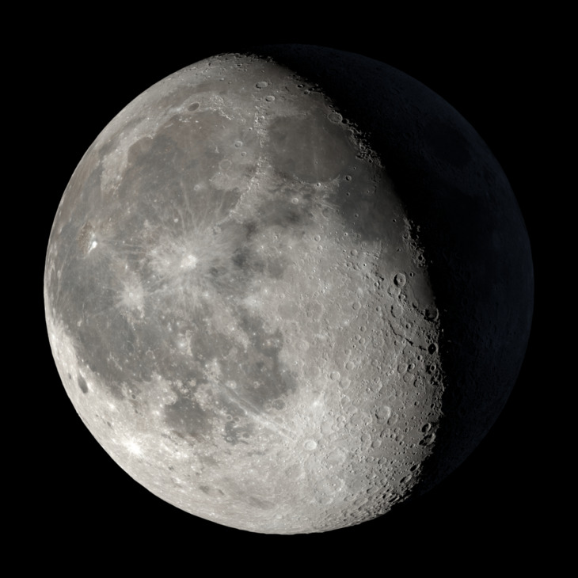

01 / LUNAR EXPLORATION ARCHIVE
Mission Explorer.
Follow the journeys. Explore the science they carried.
MISSIONS
CLPS DELIVERIES
1958–ARCHIVE START
02 / FLIGHT VIEW
LRO SURFACE MOSAIC

+
+
EARTH–MOON SYSTEMSCHEMATIC / NOT TO SCALE
◈
MISSION PATH /
04 / FLIGHT TIMELINE
Past Active Future